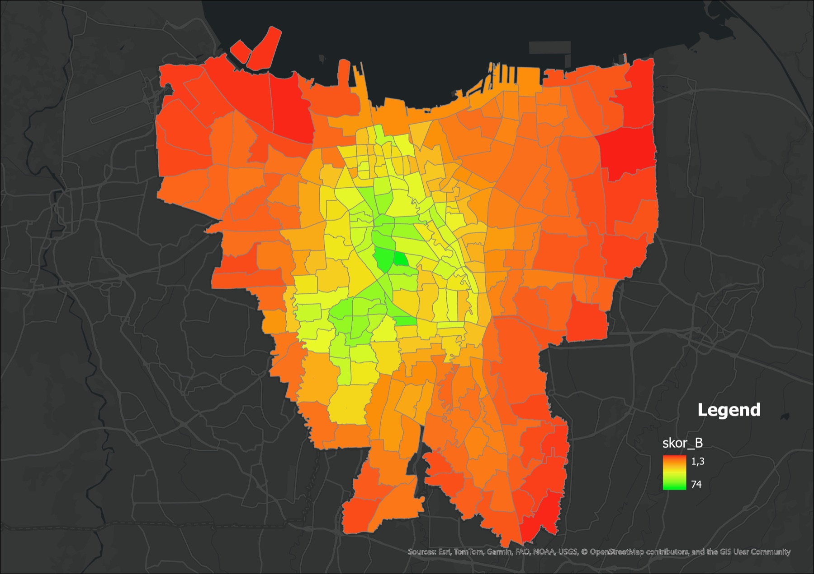
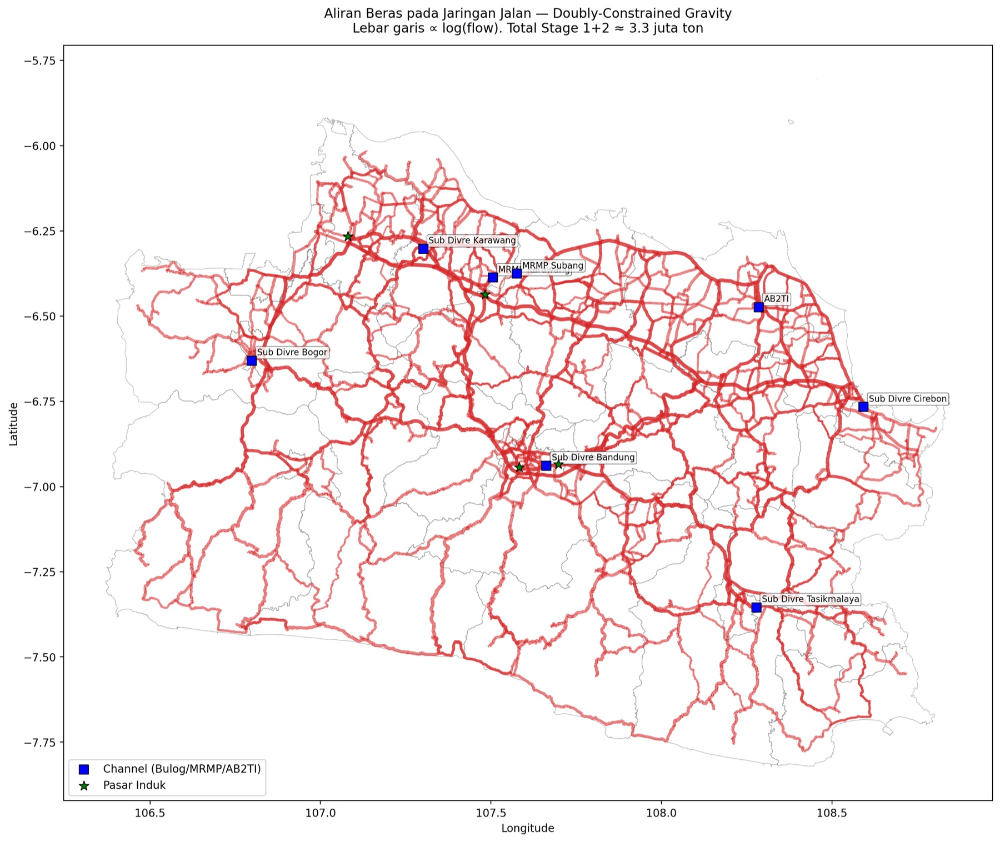
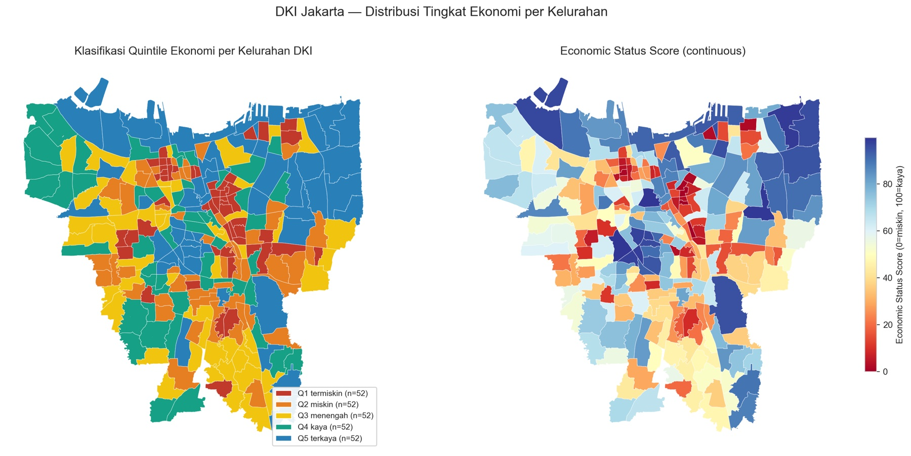
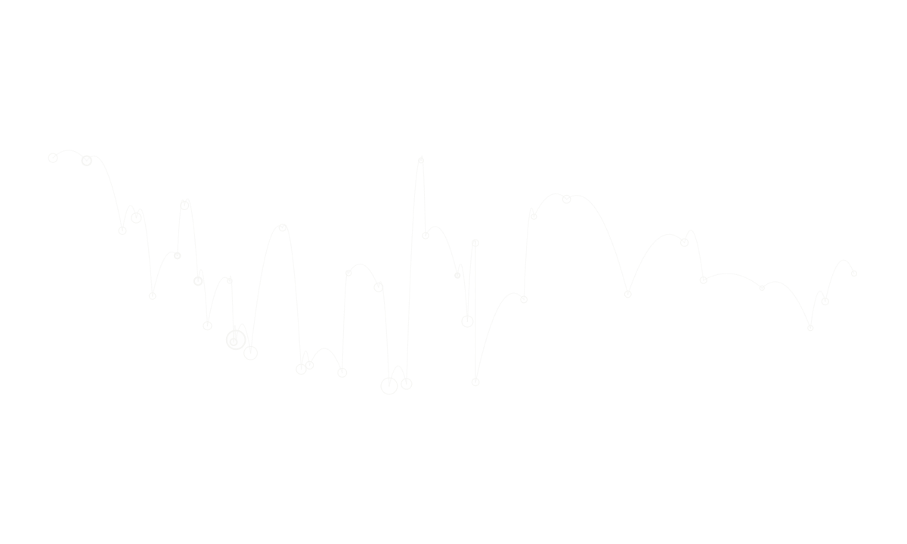

PROJECT INDEX / 05 CASE STUDIES
A portfolio of systems, not just maps.
Each case study connects a spatial method to a practical question for cities, infrastructure, and food systems.
01
NETWORK ACCESS
Transit accessibility in DKI Jakarta
Who can actually reach the city?

FOOD SYSTEMS
Critical roads for rice in West Java
Which roads keep West Java’s rice moving?

EARTH OBSERVATION
Historical paddy screening in West Java
Where does the historical signal justify closer inspection?

URBAN MORPHOLOGY
Satellite proxy for low-income communities
What can satellite morphology reveal—and what can’t it replace?

SPATIAL CLUSTERING
Mapping Indonesia’s business centers
Where do commercial centers emerge from 91,940 POIs?

OTHER PRACTICE
NEXT / CONTACT